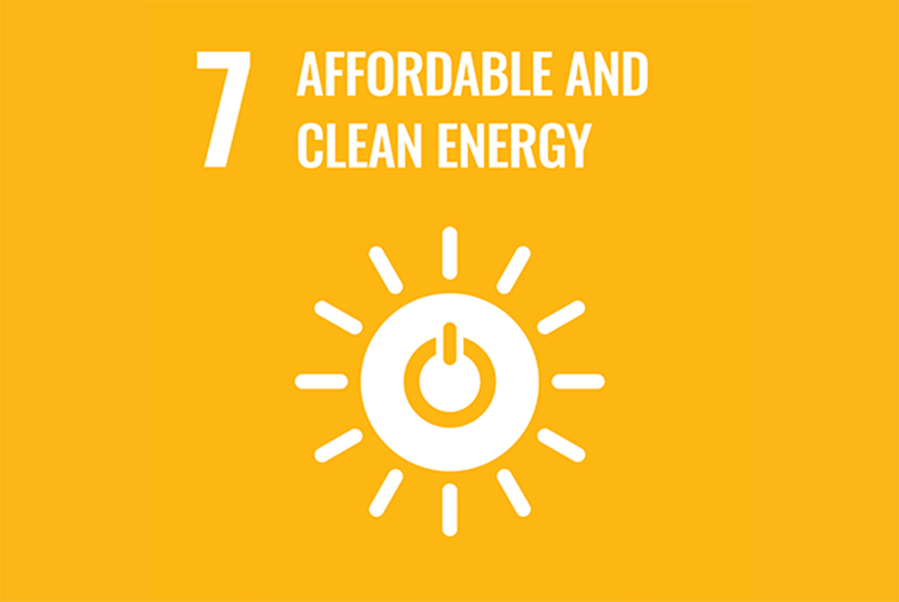
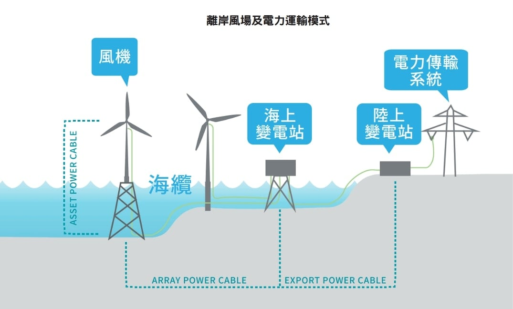
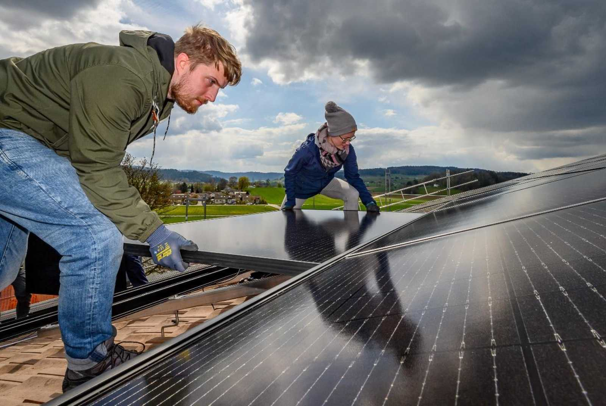

未來 30 年風力發電的成長
減少全球 CO2 排放在很大程度上依賴於可再生能源發電。除了 4 個國家之外，世界上其他所有國家都簽署了《巴黎氣候協議》，加快可再生能源的部署面臨著一定的壓力，而風力發電正在發揮帶頭作用。
在全球，風力發電現在佔非水電可再生能源的一半以上。根據國際可再生能源總署的資料顯示，風力發電的部署速度也比其他任何領域都要快，從 1997 年的 7.5 GW 增加到 2018 年的 567 GW。未來 30 年，風力發電將扮演什麼角色？面臨哪些挑戰？
技術大突破！太陽能晚上也能發電
美國史丹佛大學設計出一種太陽能電池，不止白天可以發電，晚上也能夠發電，而且發電的效率不下於白天。這種電池利用的是一種輻射冷卻效應，利用晚上從地球逃逸回太空的熱量，在太陽能面板上造成溫度差以進行發電。相關的研究成果已經被發表在科學期刊《應用物理快報》上。 
一般來說，太陽能電池只能在白天發揮作用，到晚上就只能變成裝置藝術，晚上用電需求必須靠儲能或其他類型發電設備。 科學家表示，白天從太陽收集的能量與晚上從地球散失到太空的能量相當，如果效率進一步提升，那麼太陽能板在白天與晚上都能...